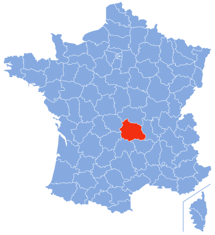
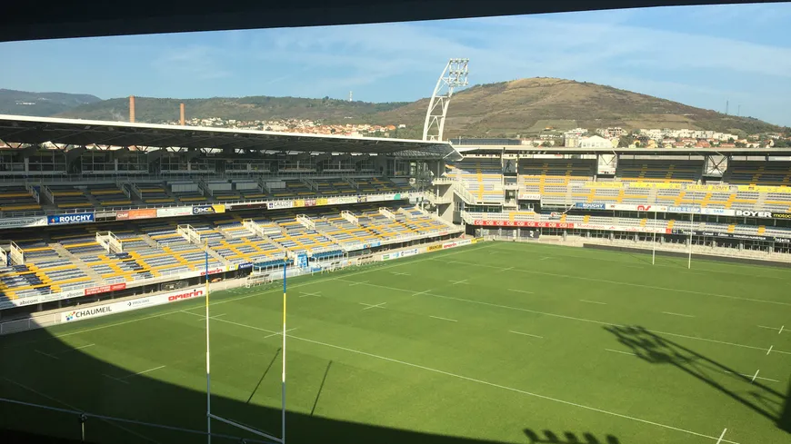
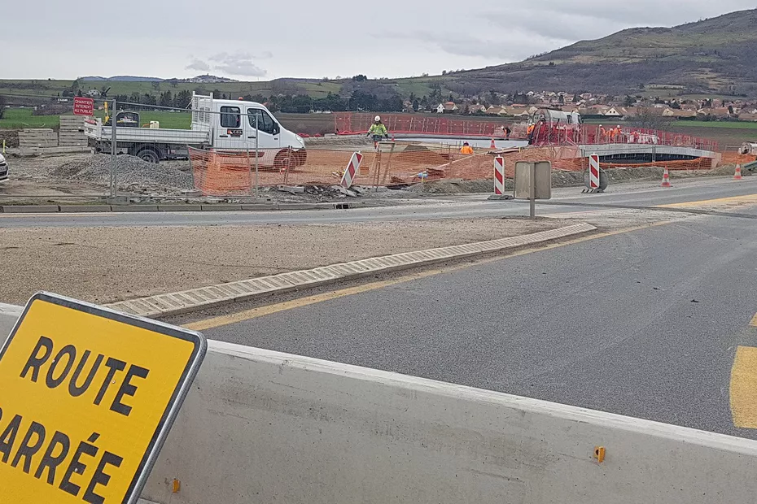
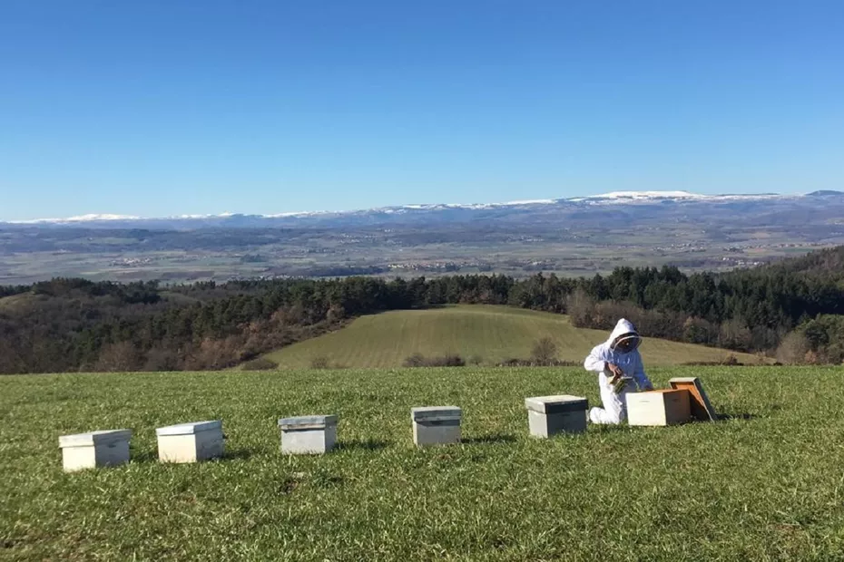

L'Auvergne ! Avec son environnement majestueux ne laissera personne
indiférrent

Actualités récentes ayant marquées le Puy-De-Dôme



Trois morts dans un accident de la routeLe public pourra revenir au stade Michelin avec Europavox Michelin avec EuropavoxFermeture définitive du lycée Ambroise Brugière à Clermont FerrandTravaux sur l’autoroute A75 : Les fermetures près de Clermont-Ferrand jusqu'au 15 avrilClermont-Ferrand : les Motards en Colère contre le contrôle technique imposé par l'EuropeChangement brutal de températures : une menace pour l’équilibre des abeilles en Auvergne ?